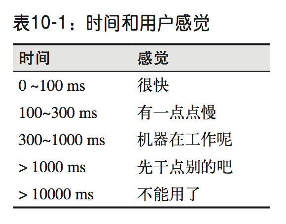

目录：
- 第一部分 网络技术概览
- 第一章 延迟与带宽
- 第二章 TCP的构成
第一部分 网络技术概览
第一章 延迟与带宽
- 对网络通信通信部分起决定性因素的有两方面：
- 延迟：分组从信息源到达目的地所需的时间
- 带宽：逻辑或物理通信最大吞吐量
- 延迟的构成
- 传播延迟：消息从发送端到接收端需要的时间，是信号传播距离和速度的函数
- 传输延迟：把消息中的所有比特转移到链路中需要的时间，是消息长度和链路速率的函数
- 处理延迟：处理分组首部、检查位错误及确定分组目标所需的时间
- 排队延迟：到来的分组排队等待处理的时间
客户端到服务器的总延迟时间为以上延迟时间的总和
- 大多数网站性能的瓶颈都是延迟，而不是带宽
- 目标：高带宽+低延迟
延迟对用户体验的影响:

第二章 TCP的构成
前言
因特网两个核心协议：
- TCP： Transmission Control Protocol ——— RFC 791
- IP： Internet Protocol ——— RFC 793
【HTTP标准并未规定TCP就是唯一的传输协议，也可以通过UDP或者其他协议来发送HTTP消息】
握手
三次握手：三次握手的细节就不讲了，这里主要想说的是其带来的延迟，使得每创建一个新 TCP 连接都要付出很大代价。而提高TCP性能的关键，在于想办法重用连接：
TCP 快速打开（TCP Fast Open TFO）：由于非常短的 TCP 连接在 互联网上随处可见，握手阶段已经成为影响网络总延迟的一个重要因素。为解决 这个问题，人们正在积极寻找各种方案，其中 TFO(TCP Fast Open，TCP 快速打 开)就是这样一种机制
Linux 3.7 及之后的内核已经在客户端和服务器中支持 TFO，因此成为了客户端和 服务器操作系统选型的有力候选方案。即便如此，TFO 并不能解决所有问题。 它虽然有助于减少三次握手的往返时间，但却只能在某些情况下有效
TODO:TFO怎么实现握手优化的…
拥塞预防及控制：
- 流量控制
- 拥塞控制
- 拥塞预防机制
流量控制：
- 接收窗口（rwnd）：每一方都要通告自己的接收窗口（rwnd），其中包含能够保存数据的缓冲区大小信息。每次发送的数据都不会大于这个窗口值。如果其中一端（一般为接收端）的缓冲区跟不上数据传输，那它会向发送端通告一个较小的窗口，来减少每次分组发送的数据。 假如窗口为零，则意味着必须由应用层先清空缓冲区，才能再接收剩余数据
- 窗口缩放(RFC 1323)：最初的TCP规范分配给通告窗口大小的字段是 16位的,最大值(65535字节)。结果在这个限制内经常无法获得最优性能，为解决这个问题，RFC 1323提供了“TCP 窗口缩放”(TCP Window Scaling)选项， 可以把接收窗口大小由 65 535 字节提高到 1G 字节，缩放 TCP 窗口是在三次握手期 间完成的，其中有一个值表示在将来的 ACK 中左移 16 位窗口字段的位数。
现在 TCP 窗口缩放机制在所有主要平台上都是默认启用的。不过，中间节点和 路由器可以重写，甚至完全去掉这个选项。如果你的服务器或客户端的连接不能 完全利用现有带宽，那往往该先查一查窗口大小。在 Linux 中，可以通过如下命 令检查和启用窗口缩放选项:
拥塞窗口
- 拥塞窗口（cwnd）：发送端会初始化一个拥塞窗口（cwnd），但不会通告给对方。每次发送的数据都是cwnd和rwnd的最小值。
- 慢启动：每次建立完连接之后，采用逐步增大拥塞窗口大小的方式慢慢启动，最初cwnd为一个TCP段，之后采用的是”指数增长“的方式，直到达到拥塞预防机制生效为止【因为很多HTTP连接都是短暂突发的连接，常常会出现还没到达到最大阈值就被终止的情况，因为慢启动会限制可用的吞吐量，而这对于小文件传输非常不利。】
现在目前大多数服务器中常见的初始拥塞窗口为：4段（RFC 2581规定），为减少慢启动的时间，可以尝试把初始拥塞窗口大小增加到10段（RFC 9828规定）
- 慢启动重启（Slow-Start Restart SSR）：这种机制会在连接空闲一定时间后重置连接的拥塞窗口。道理很简单， 在连接空闲的同时，网络状况也可能发生了变化，为了避免拥塞，理应将拥塞窗 口重置回“安全的”默认值。
SSR 对于那些会出现突发空闲的长周期 TCP 连接(比如 HTTP 的 keep-alive 连接)有很大的影响。因此，我们建议在服务器上禁用 SSR。在 Linux 平台，可以通过如下命令来检查和禁用 SSR:
拥塞预防机制
拥塞阈值(ssthresh)窗口：慢启动以保守的窗口初始化连接，随后的 每次往返都会成倍提高传输的数据量，直到超过接收端的流量控制窗口，即系统 配置的拥塞阈值(ssthresh)窗口，或者有分组丢失为止，此时拥塞预防算法介入
AIMD(Multiplicative Decrease and Additive Increase，倍减加增) 算法：即发生丢包时，先将拥塞窗口减半，然后每次往返再缓慢地给窗口增加一 个固定的值。不过，很多时候 AIMD 算法太过保守，因此又有了新的算法。
PRR(Proportional Rate Reduction，比例降速)算法：就是 RFC 6937 规定的一个新算法， 其目标就是改进丢包后的恢复速度。改进效果如何呢?根据谷歌的测量，实现新 算法后，因丢包造成的平均连接延迟减少了 3%~10%。TODO:PRR如何改进丢包的恢复速度的…
其他
- 带宽延迟积（Bandwidth-delay product，BDP）：任意时刻处于在发送途中还未收到ACK状态的最大数据量 = 数据链路的容量（带宽） * 端到端的延迟
- 队首(HOL，Head of Line)阻塞：每个TCP分组都会带着一个唯一的序列号被发，而再对于应用层而言，所有分组必须是按顺序传送到接收端。如果TCP在接收中中途有一个分组没能到达接收端的传输层，那么后续分组必须保存在接收端的 TCP 缓冲区，等待丢失的分组重发并到达接收端，之后再一起提交到应用层，而应用层在接收端只能感受到这种整体的延迟。这种效应称为 TCP 的队首阻塞
- 抖动：由于队首阻塞造成的延迟分组造成相应的重排和重组，造成分组到达延迟无法预知。这个延迟时间的变化通常被称为抖动，也是影响应用程序性能的一个主要因素
【无需按序交付数据或能够处理分组丢失的应用程序，以及对延迟或抖动要求很高的应用程序，最好选择 UDP 等协议。比如语音和游戏状态通信：
音频编解码器：就算有个包丢了，只要在音频中插入一个小小的间歇，就可以继续 处理后来的包。只要间歇够小，用户就注意不到，而等待丢失的包则可能导致音 频输出产生无法预料的暂停。相对来说，后者的用户体验更糟糕。
3D 游戏中角色更新状态也一样:收到 T 时刻的包而等待 T-1 时刻的 包通常毫无必要。理想情况下，应该可以接收所有状态更新，但为避免游戏延迟， 间歇性的丢包也是可以接受的。】
TCP优化建议：
- 服务器优化：
- 更新置最新的内核
- 增大TCP初始拥塞窗口
- 禁用慢启动重启
- 启用窗口缩放
- 打开TCP快速打开
- 应用程序调优
- 重用已经建立的 TCP 连接
- 减少下载不必要的资源
- 通过压缩算法把要发送的比特数降到最低
- 在不同的地区部署服务 器(比如，使用 CDN)，把数据放到接近客户端的地方